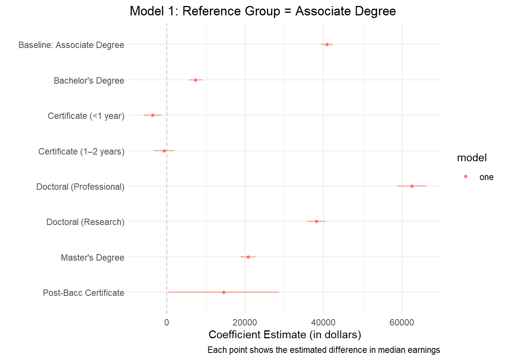
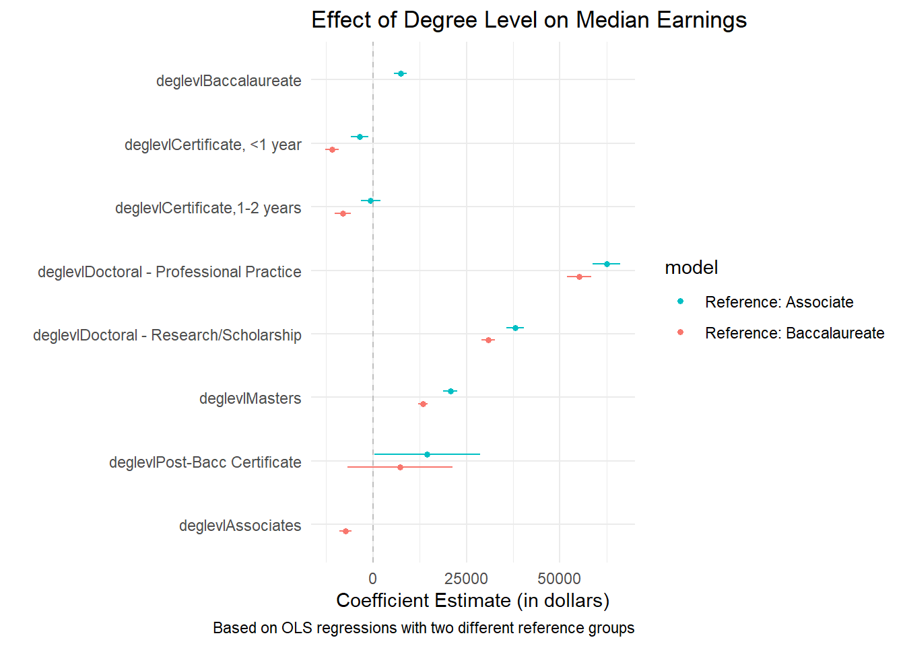
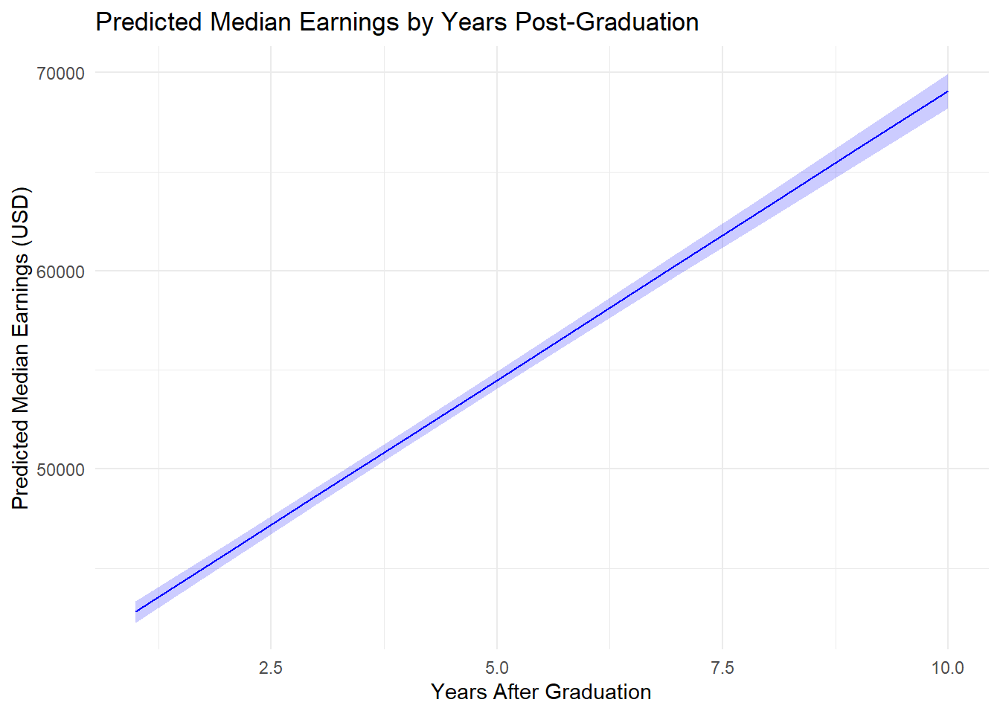
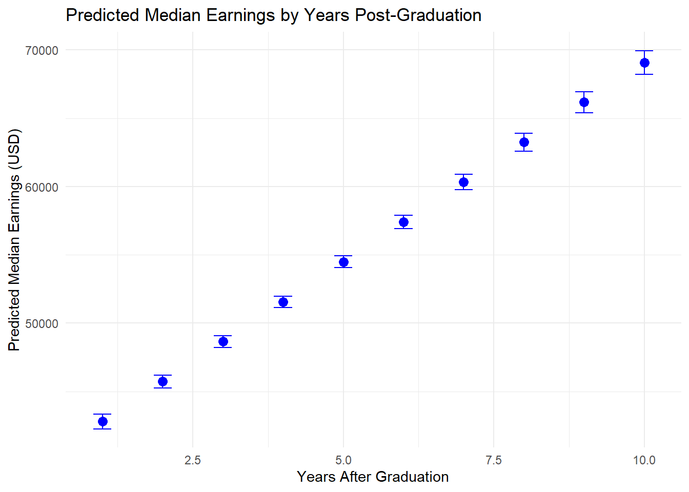

Legel 393E Spring 2025: Lab Meeting#4: Tutorial#5 Quiz Solutions
lab meeting
Additional practices and materials
Regression: Results Explanation and Visualization
Author
EricoYu
Published
April 23, 2024
This week, we will go over the solutions for Quiz 5 and some additional notes on how to explain regression results.
Loading the necessary datasets.
#create a vector contains the names of the needed packages, and assign a name "needed.packages" for it.needed.packages<-c('readxl','readr','haven','dplyr','broom','ggplot2', 'dotwhisker')#lapply() allows us to loop over and execute every element in the object "needed.packages".lapply(needed.packages, require, character.only =TRUE)
Loading required package: readxl
Loading required package: readr
Loading required package: haven
Loading required package: dplyr
Attaching package: 'dplyr'
The following objects are masked from 'package:stats':
filter, lag
The following objects are masked from 'package:base':
intersect, setdiff, setequal, union
We will need to load ANES and PSEO dataset. The other datasets (sleep, infert, faithful, chickwts, and cars) are preinstalled in R. For these pre-installed data, we can use data() to call up the datasets and load them in the R memory.
Rows: 4271 Columns: 440
── Column specification ────────────────────────────────────────────────────────
Delimiter: ","
dbl (440): CASEID, v162002, v162003, v162004, v162005, v162006, v162007, v16...
ℹ Use `spec()` to retrieve the full column specification for this data.
ℹ Specify the column types or set `show_col_types = FALSE` to quiet this message.
Rows: 18783 Columns: 14
── Column specification ────────────────────────────────────────────────────────
Delimiter: ","
chr (5): institution_name, deglevl, ciptitle, grad_cohort_label, state
dbl (9): institution_id, deglevl_code, degcip_4dig, grad_cohort, year_postgr...
ℹ Use `spec()` to retrieve the full column specification for this data.
ℹ Specify the column types or set `show_col_types = FALSE` to quiet this message.
head(pseo)
dim(pseo)
[1] 18783 14
Tutorial#5 Quiz Answers
Question 1. There is a significant difference in the group means of feeling thermometer measure towards “Rich People” between Democrats and Republican respondents.
Answer: this question is about the ANES data. Since it is testing the “statistical difference” between groups, we know that we will need to conduct a t test. You can refer to the slides of Week6 on how to do two-sample t-test step by step.
First, unlike the tutorial, I want to do an F-test to test whether the two samples have the same variance. We need to do this test before t-test because we need to determine what types of t-test we need to do (Student’s t for two groups have the SAME population variance (homoskedasticity); Welch’s t for otherwise).
var.test(rich~party, data = anes)
F test to compare two variances
data: rich by party
F = 0.58166, num df = 36, denom df = 20, p-value = 0.1537
alternative hypothesis: true ratio of variances is not equal to 1
95 percent confidence interval:
0.2520175 1.2271383
sample estimates:
ratio of variances
0.5816633
The p-value of the F-test is 0.1537, meaning that we cannot reject the null hypothesis that the two groups have the same variance. So, we should proceed with student’s t-test as tutorial teaches us.
t.test(rich~party, var.equal =TRUE, data=anes) #
Two Sample t-test
data: rich by party
t = -0.54888, df = 56, p-value = 0.5853
alternative hypothesis: true difference in means between group Democratic and group Republican is not equal to 0
95 percent confidence interval:
-123.60921 70.44061
sample estimates:
mean in group Democratic mean in group Republican
71.89189 98.47619
Agian, the p-value is greater than 0.05 and we cannot reject the null hypothesis: there is no significant difference in the group means between Democrat and Republican respondents on the rich people. Interestingly, this result has been repeatedly confirmed by numerous studies, including a few recent published ones.
Question 2. Relative to the baseline, a post-baccalaureate certificate is associated with significantly increased median earnings (p < 0.05) among survey respondents in our regression model.
Answer:
(Noted that since the question only asks you to investigate a bivariate relationship, so you can actually use either ANOVA or regression to investigate the statistical significance).
The difficult part of this study is to explain the regression results, not the method itself. Let’s run the codes first:
model1<-lm(p50_earnings ~ deglevl, data = pseo)summary(model1)
Call:
lm(formula = p50_earnings ~ deglevl, data = pseo)
Residuals:
Min 1Q Median 3Q Max
-55250 -13514 -3396 9121 271072
Coefficients:
Estimate Std. Error t value Pr(>|t|)
(Intercept) 40849.2 804.9 50.751 < 2e-16
deglevlBaccalaureate 7347.8 843.6 8.710 < 2e-16
deglevlCertificate, <1 year -3550.2 1186.7 -2.992 0.00278
deglevlCertificate,1-2 years -641.8 1345.4 -0.477 0.63334
deglevlDoctoral - Professional Practice 62507.5 1856.5 33.670 < 2e-16
deglevlDoctoral - Research/Scholarship 38132.6 1187.9 32.101 < 2e-16
deglevlMasters 20700.5 981.0 21.101 < 2e-16
deglevlPost-Bacc Certificate 14540.7 7216.1 2.015 0.04393
(Intercept) ***
deglevlBaccalaureate ***
deglevlCertificate, <1 year **
deglevlCertificate,1-2 years
deglevlDoctoral - Professional Practice ***
deglevlDoctoral - Research/Scholarship ***
deglevlMasters ***
deglevlPost-Bacc Certificate *
---
Signif. codes: 0 '***' 0.001 '**' 0.01 '*' 0.05 '.' 0.1 ' ' 1
Residual standard error: 20280 on 9964 degrees of freedom
(8811 observations deleted due to missingness)
Multiple R-squared: 0.2307, Adjusted R-squared: 0.2302
F-statistic: 426.9 on 7 and 9964 DF, p-value: < 2.2e-16
Noted the regression results: it looks very different from other regression results of two continous variables. For example:
data(mtcars)model2<-lm(mpg ~ wt, data = mtcars)summary(model2)
Call:
lm(formula = mpg ~ wt, data = mtcars)
Residuals:
Min 1Q Median 3Q Max
-4.5432 -2.3647 -0.1252 1.4096 6.8727
Coefficients:
Estimate Std. Error t value Pr(>|t|)
(Intercept) 37.2851 1.8776 19.858 < 2e-16 ***
wt -5.3445 0.5591 -9.559 1.29e-10 ***
---
Signif. codes: 0 '***' 0.001 '**' 0.01 '*' 0.05 '.' 0.1 ' ' 1
Residual standard error: 3.046 on 30 degrees of freedom
Multiple R-squared: 0.7528, Adjusted R-squared: 0.7446
F-statistic: 91.38 on 1 and 30 DF, p-value: 1.294e-10
Why?
Because the independent variable of deglevl is categorical (an ordinal variable of degree level), not a continuous variable like wt (weight of a car). When interpreting the results of a categorical independent variable in an OLS linear regression, each coefficient represents the difference in the outcome variable between that category and the reference (baseline) category, which is automatically chosen by the software (usually the first alphabetically unless specified). The intercept gives the predicted value of the dependent variable for the reference group. Each coefficient tells us how much higher or lower the predicted value is for that group compared to the reference, holding all else constant.
Therefore, the results of Model 1 show the effects of the specific IV value (degree level) in contrast to the baseline degree level. Recall Question#2: it is about comparing the “baseline” and the “post-baccalaureate certificate”. So what is the baseline degree level in this model? We will need to check the coding of deglevl:
typeof(pseo$deglevl)
[1] "character"
#opps, it seems like deglevel is coded by characters, not in numerical values. So we will have to convert it to factor (integer) so that we can present the different "values" of it.pseo$deglevl <-factor(pseo$deglevl)typeof(pseo$deglevl)
[1] "integer"
#use levels() to present different values given the variable is labeled by characters.levels(pseo$deglevl)
Ok. Now we can see in our regression results, which category is missing? The missing category is the baseline category.
So here is how we explain the results (comparing post-baccalaureate certificate and associate degree):
“Individuals whose highest degree is a Post-Baccalaureate Certificate earn, on average, $14,541 more (the coefficient) in median earnings than those in the baseline group (associate degree). The difference is statistically significant at the 0.05 level (p < 0.05).”
Additional note: we can easily change the baseline level by using the relevel() function.
pseo$deglevl <-factor(pseo$deglevl) # Ensure it's a factorpseo$deglevl <-relevel(pseo$deglevl, ref ="Baccalaureate") #set Baccalaureate as the new baselinemodel1_bacc <-lm(p50_earnings ~ deglevl, data = pseo)summary(model1_bacc)
Call:
lm(formula = p50_earnings ~ deglevl, data = pseo)
Residuals:
Min 1Q Median 3Q Max
-55250 -13514 -3396 9121 271072
Coefficients:
Estimate Std. Error t value Pr(>|t|)
(Intercept) 48196.9 252.7 190.693 < 2e-16
deglevlAssociates -7347.8 843.6 -8.710 < 2e-16
deglevlCertificate, <1 year -10898.0 907.9 -12.003 < 2e-16
deglevlCertificate,1-2 years -7989.5 1107.3 -7.216 5.76e-13
deglevlDoctoral - Professional Practice 55159.7 1691.9 32.603 < 2e-16
deglevlDoctoral - Research/Scholarship 30784.9 909.5 33.849 < 2e-16
deglevlMasters 13352.8 615.1 21.707 < 2e-16
deglevlPost-Bacc Certificate 7192.9 7175.5 1.002 0.316
(Intercept) ***
deglevlAssociates ***
deglevlCertificate, <1 year ***
deglevlCertificate,1-2 years ***
deglevlDoctoral - Professional Practice ***
deglevlDoctoral - Research/Scholarship ***
deglevlMasters ***
deglevlPost-Bacc Certificate
---
Signif. codes: 0 '***' 0.001 '**' 0.01 '*' 0.05 '.' 0.1 ' ' 1
Residual standard error: 20280 on 9964 degrees of freedom
(8811 observations deleted due to missingness)
Multiple R-squared: 0.2307, Adjusted R-squared: 0.2302
F-statistic: 426.9 on 7 and 9964 DF, p-value: < 2.2e-16
One more thing:
You may also realize I assign names for models (model 1, model 1.1, model 2), instead of just running the R functions and calling the results. There are two reasons why I do so: (1) you can type the model name to call the model without retyping the model specification and methods you apply to the model, this saves a lot of time especially if your model contains multiple variables; and (2) when we applying other functions to plot graphs (such as dot-whisker plot) and present results in a table (such as presenting multiple models in one table), calling models by their assigned names makes your coding easier and more tidy.
Question 3. According to our bivariate regression model, median earnings (p50_earnings) for graduates increases by what amount each year after graduation, on average?
Answer: this is similar to the last question, but we are runnign a bivariate regression model with two continuous variables (earning and years after graduation).
model3<-lm(p50_earnings ~ year_postgrad, data = pseo)summary(model3)
Call:
lm(formula = p50_earnings ~ year_postgrad, data = pseo)
Residuals:
Min 1Q Median 3Q Max
-44670 -13861 -5236 8851 250178
Coefficients:
Estimate Std. Error t value Pr(>|t|)
(Intercept) 39880.13 319.76 124.72 <2e-16 ***
year_postgrad 2921.09 62.87 46.46 <2e-16 ***
---
Signif. codes: 0 '***' 0.001 '**' 0.01 '*' 0.05 '.' 0.1 ' ' 1
Residual standard error: 20960 on 9970 degrees of freedom
(8811 observations deleted due to missingness)
Multiple R-squared: 0.178, Adjusted R-squared: 0.1779
F-statistic: 2159 on 1 and 9970 DF, p-value: < 2.2e-16
The answer is 2,981.09.
Question 4. According to our bivariate regression model, median earnings (p50_earnings) for graduates in the year after they graduate (year_postgrad == 0) is on average:
Answer: this is a simple one. So the above regression formula can be written in the following way: \(earnings = \alpha + \beta*years\), or \(earnings = intercept + slope * years\), thus \(earnings = 39880.13 + 2921.09*years\). If year_postgrad = 0, the predicted earning is $39,880.13.
Question 5. Say we have two variables, X and Y. What function would calculate the correlation between those two variables?
Just simple as cor(X, Y).
Additional Introduction to Present Regression Results.
1. Creating dot-whisker plots to visually present regression results.
You may remember we introduced a few graphs to visualize the results in week#10. Among them, the dot-whisker plot with the reference level (the dasheded line of 0) and the bands of the confidence interval for each variable is a great way to present regression results. In R, we can easily apply a function in the dotwhisker pacakge (an extension based on ggplot2) to do so:
library(dotwhisker)library(broom)#Tidy the modelm1_tidy <-tidy(model1) #The tidy() function converts a model object (like lm, glm, etc.) into a clean, easy-to-read data frame — with one row per model term (e.g., intercept, predictors).#Relabel the variable so it looks clear. This step is optional, but strongly suggested, especially for continous/numerical values.library(dplyr)m1_tidy <- m1_tidy %>%mutate(term =recode(term,"(Intercept)"="Baseline: Associate Degree","deglevlBaccalaureate"="Bachelor's Degree","deglevlMasters"="Master's Degree","deglevlDoctoral - Professional Practice"="Doctoral (Professional)","deglevlDoctoral - Research/Scholarship"="Doctoral (Research)","deglevlCertificate, <1 year"="Certificate (<1 year)","deglevlCertificate,1-2 years"="Certificate (1–2 years)","deglevlPost-Bacc Certificate"="Post-Bacc Certificate" ))#Finally, plot the graphdwplot(m1_tidy, by_2sd =FALSE) +theme_minimal() +labs(title ="Model 1: Reference Group = Associate Degree",x ="Coefficient Estimate (in dollars)",y ="",caption ="Each point shows the estimated difference in median earnings" ) +geom_vline(xintercept =0, linetype ="dashed", color ="gray")

We can also plot two models on the same graph:
# Tidy both modelsmodel1_tidy <-tidy(model1) %>%mutate(model ="Reference: Associate")model2_tidy <-tidy(model1_bacc) %>%mutate(model ="Reference: Baccalaureate")# Combine modelscombined_models <-bind_rows(model1_tidy, model2_tidy)# Plot dot-whisker plotdwplot(combined_models, by_2sd =FALSE) +theme_minimal() +labs(title ="Effect of Degree Level on Median Earnings",x ="Coefficient Estimate (in dollars)",y ="",caption ="Based on OLS regressions with two different reference groups" ) +geom_vline(xintercept =0, linetype ="dashed", color ="gray")

You can check out the user mannual here to see how to cutomize the colors, labels, position of legends, and adding a reference line.
2. Visualizing the effect of degree level on predicted earnings (Marginal effects)
A marginal effect tells us how the expected value of the dependent variable (e.g., earnings) changes when we change one independent variable, while holding all others constant.
For categorical variables (like degree level), it shows the expected difference in outcomes between each category and a baseline.
For continuous variables, it represents the slope — the expected change in the outcome for each unit increase in the predictor.
In general, presenting a marginal effect plot allows us to see the differences more intuitively. This is especially helpful when we try to interpret the results of models with binary or catetgorical dependent variables.
Let’s take a look at the pseo example of earning and years of graduation.
#Step#1: run the linear regression (we already ran it above)# model3 <- lm(p50_earnings ~ year_postgrad, data = pseo)#step#2: create a prediction datase contains a sequence of values for year_postgrad (e.g., 0, 1, 2, ..., 10) newdata <-data.frame(year_postgrad =seq(min(pseo$year_postgrad, na.rm =TRUE),max(pseo$year_postgrad, na.rm =TRUE),by =1)) #we specify the interval of year is 1.#Step#3: Use predict() to Get Fitted Values and Confidence Intervals predicted <-predict(model3, newdata = newdata, interval ="confidence")predicted_df <-cbind(newdata, as.data.frame(predicted))#Step#4: Plot it with ggplot2 using scatterplot geom_point():ggplot(predicted_df, aes(x = year_postgrad, y = fit)) +#fit = the predicted average earnings (based on your model)geom_line(color ="blue") +geom_ribbon(aes(ymin = lwr, ymax = upr), fill ="blue", alpha =0.2) +#lwr and upr = lower and upper bounds of the 95% confidence intervallabs(title ="Predicted Median Earnings by Years Post-Graduation",x ="Years After Graduation",y ="Predicted Median Earnings (USD)" ) +theme_minimal()

Some of you may ask why don’t use geom_point() ? The reason is that the years of graduation is a continous variable with fixed interval (each gap is a full year, not fractional like earnings (1.7, 300.2); or we call this a discrete variable). If we plot it using geom_point() plot each predicted value as a dot (instead of a connected line). And it emphasizes the individual predictions more than the trend.
ggplot(predicted_df, aes(x = year_postgrad, y = fit)) +geom_point(size =3, color ="blue") +geom_errorbar(aes(ymin = lwr, ymax = upr), width =0.3, color ="blue") +labs(title ="Predicted Median Earnings by Years Post-Graduation",x ="Years After Graduation",y ="Predicted Median Earnings (USD)" ) +theme_minimal()

3. Explaining logistic regression (Week 9 and Week 10)
Let’s take a look at an example of the dataset which we didn’t cover briefly in the class.
library(mlbench)data("PimaIndiansDiabetes", package ="mlbench")pima<-PimaIndiansDiabetes #use the abbreiviationhead(pima)
summary(pima)
pregnant glucose pressure triceps
Min. : 0.000 Min. : 0.0 Min. : 0.00 Min. : 0.00
1st Qu.: 1.000 1st Qu.: 99.0 1st Qu.: 62.00 1st Qu.: 0.00
Median : 3.000 Median :117.0 Median : 72.00 Median :23.00
Mean : 3.845 Mean :120.9 Mean : 69.11 Mean :20.54
3rd Qu.: 6.000 3rd Qu.:140.2 3rd Qu.: 80.00 3rd Qu.:32.00
Max. :17.000 Max. :199.0 Max. :122.00 Max. :99.00
insulin mass pedigree age diabetes
Min. : 0.0 Min. : 0.00 Min. :0.0780 Min. :21.00 neg:500
1st Qu.: 0.0 1st Qu.:27.30 1st Qu.:0.2437 1st Qu.:24.00 pos:268
Median : 30.5 Median :32.00 Median :0.3725 Median :29.00
Mean : 79.8 Mean :31.99 Mean :0.4719 Mean :33.24
3rd Qu.:127.2 3rd Qu.:36.60 3rd Qu.:0.6262 3rd Qu.:41.00
Max. :846.0 Max. :67.10 Max. :2.4200 Max. :81.00
The data set PimaIndiansDiabetes2 contains a corrected version of the original data set. While the UCI repository index claims that there are no missing values, closer inspection of the data shows several physical impossibilities, e.g., blood pressure or body mass index of 0. In PimaIndiansDiabetes2, all zero values of glucose, pressure, triceps, insulin and mass have been set to NA, see also Wahba et al (1995) and Ripley (1996).
Suppose we are studying how glucose level and body mass affect the probability of getting diabete, we can model the regression below:
model_diabete<-glm(diabetes ~ glucose + mass, data = pima,family =binomial(link ="logit"))summary(model_diabete)
Call:
glm(formula = diabetes ~ glucose + mass, family = binomial(link = "logit"),
data = pima)
Coefficients:
Estimate Std. Error z value Pr(>|z|)
(Intercept) -7.515639 0.605236 -12.418 < 2e-16 ***
glucose 0.035169 0.003289 10.694 < 2e-16 ***
mass 0.076334 0.013338 5.723 1.05e-08 ***
---
Signif. codes: 0 '***' 0.001 '**' 0.01 '*' 0.05 '.' 0.1 ' ' 1
(Dispersion parameter for binomial family taken to be 1)
Null deviance: 993.48 on 767 degrees of freedom
Residual deviance: 771.40 on 765 degrees of freedom
AIC: 777.4
Number of Fisher Scoring iterations: 4
Note: since we are doing log-odd transformation for the dependent variable to fit a lienar regression model, we cannot use the same way to explain the coefficients of the logistic regression.
In other words, what the result presented here is corresponding to this model:
And we want to get \(p\).
Suppose someone has glucose = 120 and mass = 35. To calculate the probability of getting diabete, we can do manually calculation by
So how do we explain this? it means that: “For an individual with a glucose level of 120 and BMI of 35, the model predicts that they have a 34.1% chance of having diabetes.”
We can also do this in R:
newdata <-data.frame(glucose =120, mass =35)predict(model_diabete, newdata = newdata, type ="response")
1
0.3489477
newdata$predicted_prob <-predict(model_diabete, newdata = newdata, type ="response")print(newdata)